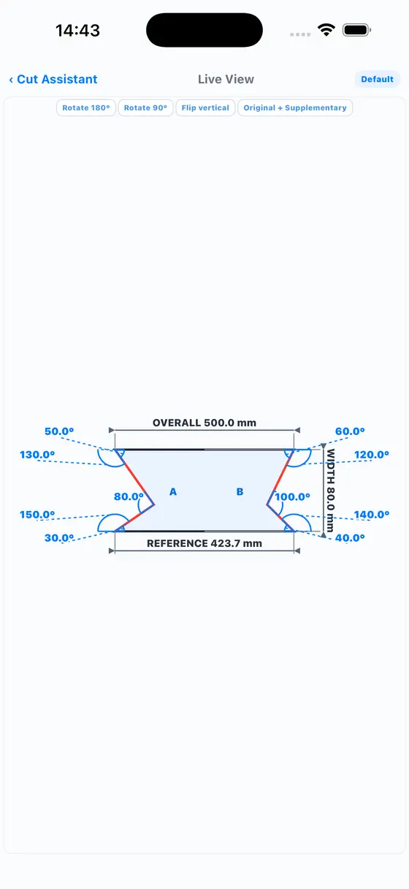
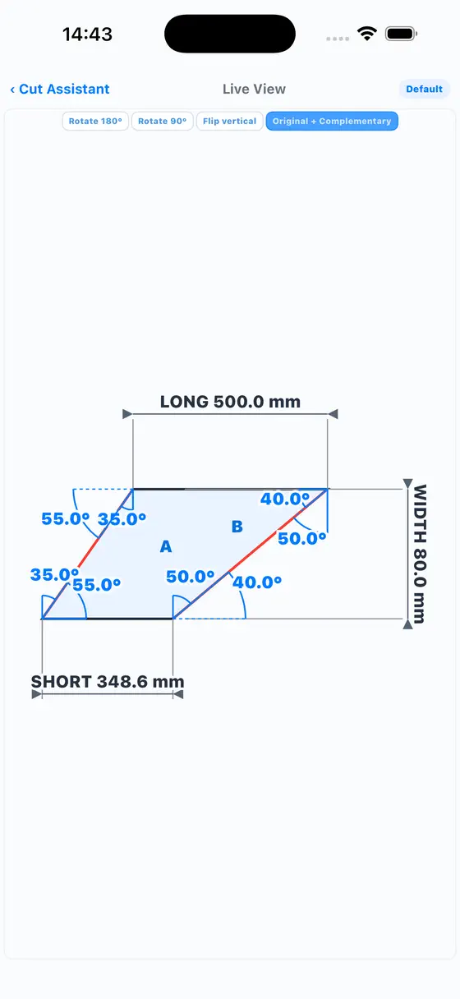
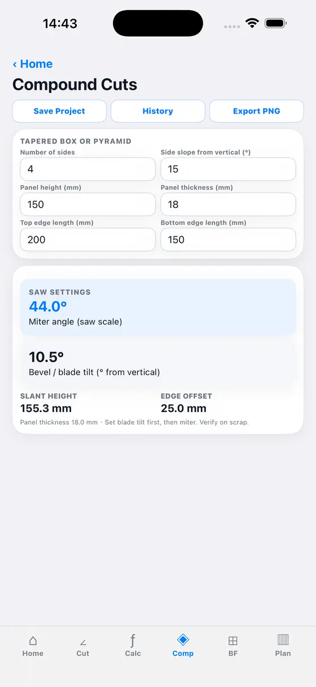

رسمك يقول 40°. منشرك يقول 50°. كلاهما على صواب.
يمنحك الرسم زاوية واحدة، ويقرأ مقياس ماكينتك أخرى، وحيثما بينهما يوجد 90 − 40 = 50 ذهني عليك إجراؤه في رأسك، بالقفازات، قبل نزول النصل. يقوم Tube Miter Calculator بهذا التحويل عنك ويعرض الزاوية ومكمّلها ومتمّتها جنبًا إلى جنب — بجوار طولي الحافة الطويلة/القصيرة/الوسطية ورسم محدّد الأبعاد يمكنك تدويره ليتوافق مع الماكينة أمامك.
للورشات وتركيب الهياكل الفولاذية وصنّاع الدرابزين والأقفاص والنجّارين والمنجّارين ومُحدّثي المنازل — مع الحسابات اليومية (القطع المركّب وأقدام الألواح وخطط القص). يعمل كليًا دون اتصال، بالنظام المتري أو الإمبراطوري.


الزاوية في رسمك ليست الرقم على منشرك
كل مهنة تصطدم بهذا: الخطة أو التخطيط أو توزيع الأنابيب يعطي زاوية مقيسة بطريقة، بينما منشار الأقطاب أو المنشار البارد أو منشار القص أو طاولة منشار الشريط أو دليل الأقطاب أمامك مدرّج بالطريقة المعاكسة. قراءة تبدأ من القطع المستقيم، وأخرى من خط السور، وأخرى هي القيمة المنفرجة. تحوّل في رأسك — وحين يبدو الرقمان قابلين للتبادل تقريبًا، فإن هذا التحويل هو بالضبط حيث تهلك القطع.
🏗 الورشات وفرق الهياكل
درابزين وسياجات وهياكل بيوت محمية وسياجات مواقع. يعطي رسم المقطع الزاوية المحصورة؛ والماكينة تريد شيئًا آخر. وبعد جدال ساخر يفعل أحدهم 90 − 47.5 على لوحة أرقام هاتف مغبر.
🔧 التصنيع والرياضة الآلية
أقفاص الحماية وعُقد الشاسيه وعوادم العادم. لكل عقدة زاويتا قطع مختلفتان، ولكل منهما مكمّل تحتاجه أيضًا — عقدة واحدة تصبح أربعة أرقام يجب تتبعها قبل أي نقب.
🪚 النجّارون والمنجّارون والأعمال اليدوية
إطارات مائلة وصناديق مدبّبة وإطارات لوحات ومداخل زخارف وألواح القاعدة. بعض الأدوات تقرأ من القطع المستقيم وبعضها من السور، وتغيير الـ90° في منتصف العمل هو كيف يتحول الخشب الصلب الثمين إلى قصاصات.
لماذا 40° و50° هما الثنائي الخطِر
40° و50° متتامّان (مجموعهما 90°)، فيبدو كلاهما منطقيًا تمامًا بجوار الوصلة نفسها — والفرق بينهما 10° فقط. يظهر ضِعف هذا الخطأ عند الوصلة، لأن الطرفين كلاهما قُصّا.
إنها أسوأ منطقة للحساب الذهني:
- 45° ↔ 45° — الانعكاس غير مرئي، فلا يلاحظ أحد أي شيء.
- 30° ↔ 60° — متباعدان، فيكون الخطأ عادة واضحًا للعين.
- 40° ↔ 50°، 35° ↔ 55°، 47.5° ↔ 42.5° — قريبة بما يكفي لتبدو قابلة للتبادل، ومختلفة بما يكفي لإعدام القطعة. هنا تحدث الأخطاء فعلًا.
وليس 90° فقط: بعض مهام التخطيط تعمل بالقراءة المتمّمة أيضًا، فينضم 180 − a إلى القائمة. ثلاثة أرقام معقولة، وضبط واحد صحيح، وأنبوب واحد.


ما تحصل عليه من إدخال واحد، مثال محلول a = 40°
| القراءة | ما هي | متى تحتاجها | a = 40° |
|---|---|---|---|
| زاوية القطع المائل a | الانحراف عن القطع المستقيم (القطع المستقيم هو 0°) | المقاييس والأدوات المدرّجة من القطع المستقيم | 40° |
| المكمّل 90 − a | القراءة المعكوسة للقطع نفسه | المقاييس حيث يعني 90° الاستقامة، وقراءات خط السور | 50° |
| المتمّم 180 − a | القيمة المنفرجة للخط نفسه | التخطيط ومنقولة الزوايا وقراءات الزاوية المحصورة | 140° |
ما تزال أنت من يختار الرقم الذي تريده ماكينتك — المهم أنك لم تعد بحاجة إلى اشتقاقه في منتصف العمل والنصل يدور.
المزايا الرئيسية
ست هندسات قطع وخمس حاسبات ورشة، تُحل كلها دون اتصال في جزء من الثانية.
∠ ست هندسات قطع
مستقيم/مائل، أقطاب متوازية، أقطاب متقابلة، مدبّب/مدبّب، مدبّب/نقب V ونقب V/نقب V. يحمّل كل إعداد مسبق قيمًا افتراضية واقعية فتغيّر رقمًا واحدًا لا ستة.
📏 لا تشتقّ 90 − a يدويًا بعد الآن
تُطبع الزاوية والمكمّل (90 − a) والمتمّم (180 − a) معًا لكل قطع، بجوار طولي الحافة الطويلة/القصيرة/الوسطية — لتتوافق مع أي مقياس يطبع منشرك، سواء كان يقرأ 0° أو 90° عند الاستقامة.
🖼 عرض حي محدّد الأبعاد
مقطع طرفي بملء الشاشة مرسوم بمقياس رسم مع أسهم أبعاد. تدوير 90° / 180°، وقلب رأسي، والتبديل بين تسمية الأصلي + المكمّل أو الأصلي + المتمّم ليتوافق مع القطعة على طاولتك.
◈ القطع المركّب
زاوية القطع المائل وميل النصل للصناديق المدبّبة والأهرامات والإطارات المائلة. أدخل عدد الأضلاع وميل الضلع وارتفاع اللوح وسماكته — واحصل على إعدادات المنشار والارتفاع المائل وإزاحة الحافة.
⊞ أقدام الألواح والتكلفة
حجم الأخشاب من السماكة والعرض والطول، مع الكمية والسعر لكل قدم لوح وعامل هدر اختياري. متري أو إمبراطوري.
▥ محسّن المخزون
أدخل طول القضيب الخام وعرض النصل وقص الطرف مع القطع المطلوبة — فيرسم خطة قص عملية ويخبرك بما تبقى.
ƒ حاسبة الورشة
لوحة مفاتيح مخصصة بحسب المثلثات بالدرجات (sin وcos وtan وعكوسها) ونسخ النتيجة بلمسة واحدة — بلا معاناة مع حاسبة iOS بالقفازات.
💾 المشاريع وتقارير PNG
احفظ الإدخالات في السجل باسم مشروع، وأعد تحميلها في العمل التالي، وصدّر تقرير PNG إلى الصور أو مباشرة إلى ورقة المشاركة في iOS.
🔒 دون اتصال وخصوصية كاملة
بلا إنترنت وبلا تسجيل دخول وبلا تحليلات. الوحدات (مم / بوصة) وإبقاء الشاشة مضاءة وإعادة الضبط هي الإعدادات الوحيدة — كل ما عدا ذلك يحدث على جهازك.
شاهده وهو يعمل
أربعة مقاطع قصيرة مستخرجة من تسجيلات شاشة حقيقية على iPhone 17 Pro Max — يقود التطبيق سيناريو مبرمج، فكل لمسة وضغطة مفتاح وإعادة حساب على الشاشة حقيقية. تشغيل تلقائي صامت مع تسميات توضيحية على الشاشة.
التبديل بين هندسات القطع
مرّ على الإعدادات الستة المسبقة — يتحدث الرسم وكل طول أثناء التنقل.
العرض الحي: تدوير وقلب وإعادة تسمية
افتح العرض الكامل، ودوّر 90°، واقلب رأسيًا، وبدّل تسمية الزوايا.
حاسبة الورشة
40 + 50 = 90، ثم sin(40°) على اللوحة المدمجة — ثم انسخ النتيجة بلمسة واحدة.
وحدات الورشة الأخرى
قطع مركّب سَداسي عند 20°، وطلب أخشاب من 12 لوحًا، ثم التحسين — كل وحدة تحل أثناء الكتابة.
كيف يعمل
أربع خطوات من وصلة على الطاولة إلى أرقام على منشرك.
تعليمات خطوة بخطوة
كل شاشة في التطبيق، بالترتيب الذي تستخدمه فعلًا.








حالات استخدام واقعية
حيث يثبت حساب القطع المائل قيمته فعلًا.

الدرابزين والسياجات
اقطع الدرابزين ليصل إلى العمود بزاوية الميل الدقيقة، أو اصنع سرجًا بفم سمكة ليلتف الأنبوب حول العمود بنظافة. دوّر العرض الحي لترى الوصلة كما ستمسكها أعلى الدرج.

أقفاص الحماية والشاسيه والإطارات
هياكل الأنابيب كثيرة العُقد هي في الغالب قطوع مدبّبة ونقوب V. اضبط زاوية العقدة مرة، واحصل على الأطوال الطويلة/القصيرة/الوسطية، واقطع كل أنبوب عند تلك العقدة بالأرقام نفسها.

تجهيز في الموقع بلا إشارة
المواقع النائية والحاويات الشحنية وغرف المعدات بالأقبية بلا تغطية. كل شيء في التطبيق يعمل على الجهاز، فالحساب متاح عندما تحتاجه.
الأسئلة الشائعة
الرسم يقول 40° ومنشاري يقرأ 50°. أيهما الصحيح؟
كلاهما يصف القطع نفسه — فهما متتامّان (مجموعهما 90°). تُقاس زاوية القطع المائل a من القطع المستقيم، و90 − a هو الخط نفسه مقروءًا بالاتجاه الآخر. ولهذا بالضبط يخدع 40/50 الناس: يبدو الرقمان قابلين للتبادل، لكن ضبط الخاطئ يضع 10° من الخطأ عند كل طرف و20° عند الوصلة. يطبع التطبيق القراءتين جنبًا إلى جنب فلا تضطر أبدًا لاشتقاق الثانية في الورشة.
هل أضبط الزاوية أم مكمّلها على المنشار؟
يعتمد على كيفية تقسيم مقياس ماكينتك. إذا قرأ المقياس 0° عند الاستقامة، فاضبط زاوية القطع المائل a. وإذا قرأ 90° عند الاستقامة (تقسيم من خط السور)، فاضبط 90 − a. وبعض منقولة الزوايا ومهام التخطيط تستخدم القراءة المنفرجة 180 − a. في العرض الحي استخدم زر الأصلي + المكمّل / الأصلي + المتمّم لتسمية الرسم كما يُطبع مقياسك، ثم تحقق دائمًا على قصاصة أولاً.
كيف تُعرَّف زاوية القطع المائل؟
تُقاس زاوية القطع المائل من القطع المستقيم، فيكون القطع المستقيم 0°. ويعرض العرض الحي أيضًا القيم المكمّلة (90° − الزاوية) أو المتمّمة لتتوافق مع المقياس المطبوع على منشرك.
ما الفرق بين القطع المدبّب والنقب على شكل V؟
القطع المدبّب يُدبّب طرف الأنبوب إلى نقطة واحدة ويُستخدم حين يلتقي أنبوب بآخر بزاوية. أما نقب V (فم السمكة) فيزيل سرجًا على شكل V ليلتف الأنبوب حول عمود أسطواني أو أنبوب آخر — الوصلة الكلاسيكية للدرابزين ووصلات T وأقفاص الحماية. ويتعامل التطبيق مع كليهما ومع التوليفة المدبّب/نقب V.
كيف أبدّل بين المليمترات والبوصات؟
المس أيقونة الترس في الشاشة الرئيسية واختر متريًا أو إمبراطوريًا. تُحوَّل القيم الموجودة تلقائيًا ويُحفظ الاختيار.
لماذا لا أستطيع حفظ التقرير في الصور؟
يحتاج التطبيق إلى إذن «إضافة الصور فقط». فعّله في إعدادات iOS ← الخصوصية والأمان ← الصور ← Tube Miter Calculator. ويمكنك دائمًا استخدام خيار المشاركة بدلًا من ذلك.
هل يحتاج التطبيق إلى اتصال بالإنترنت؟
لا. تظل جميع الحسابات والمشاريع المحفوظة على جهازك. لا حساب ولا تحليلات ولا تتبع — راجع سياسة الخصوصية.
هل يمكنني حفظ عمل والعودة إليه؟
نعم. احفظ الإدخالات في السجل باسم مشروع وأعد تحميلها لاحقًا — لكل وحدة على حدة (القطع، المركّب، أقدام الألواح، المخزون). واحذف الإدخالات غير المطلوبة من اللوحة نفسها.
هل يعمل على آيباد؟
نعم. إنه تطبيق عام بتصميم أعرض على آيباد ودعم كامل لاتجاه الشاشة.
ما دقة النتائج؟
الحسابات دقيقة للهندسة المثالية؛ وتعتمد الدقة الفعلية على مدى مطابقة إدخالاتك للمادة — القطر المقاس وسماكة الجدار وزاوية الوصلة وعرض النصل. اقطع دائمًا قطعة أولى للتحقق قبل القص بالجملة.
كيف أتواصل مع الدعم؟
راسلنا على wangning.engineer@outlook.com. وقت الاستجابة المعتاد من 24 إلى 48 ساعة.
ملاحظة السلامة
النتائج مساعدات إعداد. قبل كل دفعة: أكّد اتجاه تقسيم مقياس ماكينتك (0° عند الاستقامة أو 90° عند الاستقامة)، ثم أكّد هوية الطرف والوجه العلوي/السفلي وجانب الحافة العاقرة وجانب الهدر وعرض النصل، وافحص قطعة أولى واحدة. وخاصة مع الأزواج شبه المتناظرة مثل 40° / 50°، تكلّف القطعة التجريبية دقيقة واحدة؛ بينما يكلّف الخطأ الأنبوب. ارتدِ واقي العين والسمع، واتبع دليل ماكينتك.
احصل على التطبيق
Tube Miter Calculator متاح على App Store لآيفون وآيباد.